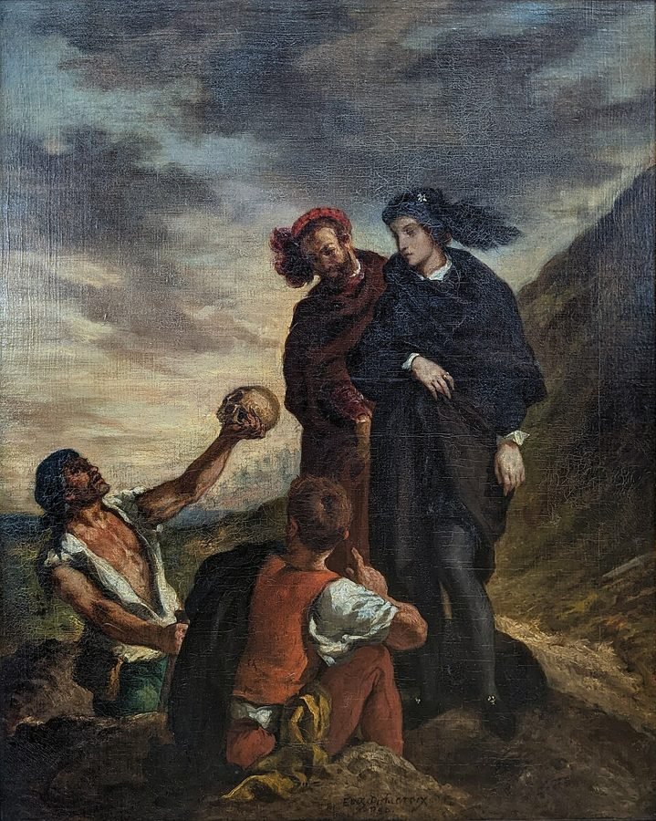
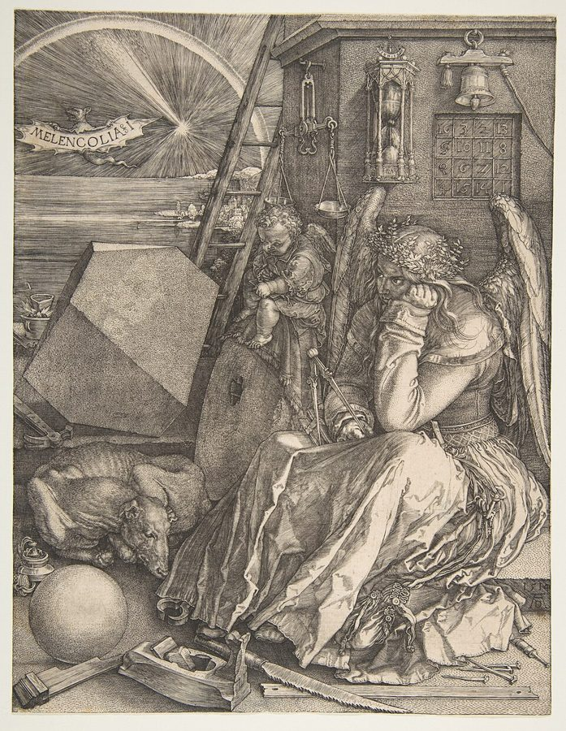
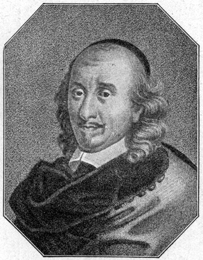
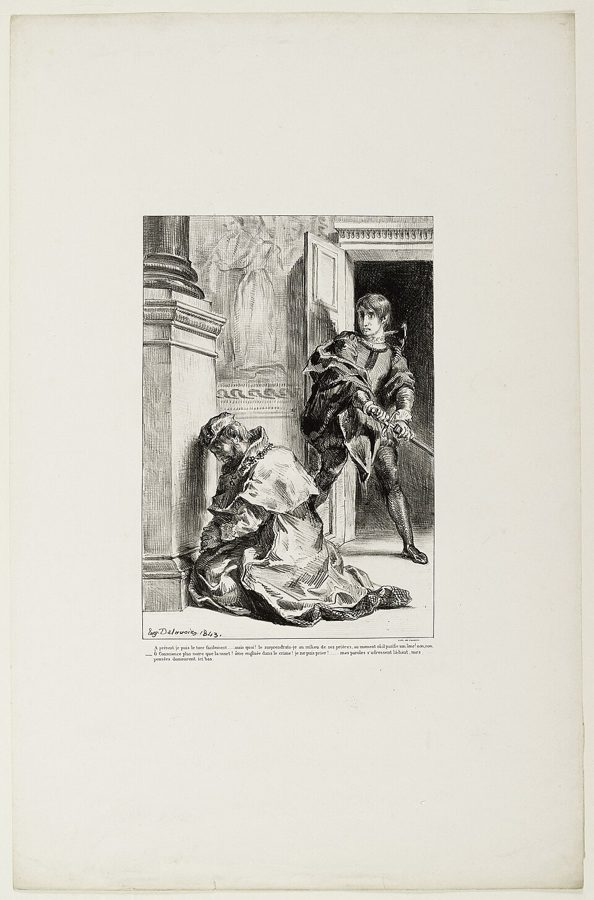

这一页在做什么
这一页讲舞台上的时间。作者先从亚里士多德的《诗学》里提出一条「史诗长、戏剧短」的公式，讲后人怎样把它变成「时间单一」的铁律；再看法国的高乃依怎样在《熙德》里守着二十四小时，又悄悄把它拉长；最后读《哈姆雷特》，看时间怎样从规则变成剧情本身。读的时候抓两条线：规则给一出戏多少时间，和剧中人怎样争夺时间。

德拉克洛瓦《哈姆雷特和霍拉旭在墓地》（1839，卢浮宫藏）。掘墓人举起的是弄臣约里克的骷髅，第 33 段讲的就是这一场。Eugène Delacroix，公有领域，维基共享资源 读之前：这一页在全书的哪里
第 5 章讲话怎样说得短、说得快，走的是「缩短技艺」那条路。第 6 章换到舞台：作者在第 1 段说，亚里士多德的诗学可以压成一句「准希波克拉底公式」，回扣的是第 1 章那句「生命短，技艺长」。第 19 段说哈姆雷特父亲受罚的方式「我们已在但丁那里学过」，并注明见第 3 章第 2 节，这一回指得对，就是讲炼狱的那一节。
一出戏只能占二十四小时左右。在这么短的时间里，时间本身怎样变成戏的主角？
读的时候带着这几个问题。不用先找答案，读完回来对照「检查一下理解」。
为什么史诗可以长、戏剧必须短？这是亚里士多德定的规矩，还是作者替他总结的？§1
高乃依说自己守了二十四小时，作者却说他用了一个「诡计」。诡计在哪里？他自己满意吗？§2
哈姆雷特举起了剑，又放下。作者认为拦住他的是什么？这一放，在时间上意味着什么？§3
这一页的路线
三节长短悬殊：§1 只有六百词，是理论；§2 是一个例子；§3 有两千多词，是这一页的主体。前两节谈的是「戏外」的时间：规则允许一出戏的情节占多长。到了 §3，作者先说莎士比亚不怎么在乎这条规则，然后话锋一转，说真正的时间戏在剧情里面：一方是抢时间的凶手，一方是慢性子的王子。§3 中间的花饰分隔（第 23 段起）就是从克劳狄斯转到哈姆雷特的地方。读到 §3 会觉得「三一律怎么不提了」，这是作者有意从规则转到剧情。
§1 第 1–5 段
§2 第 6–16 段
§3 第 17–34 段
戏外
剧情里
史诗长 戏剧短
时间单一
正午到正午
夜里的转机
Examen
规则放松
凶手抢时间
王子的慢
错过时机
结局算账
本站示意图。蓝点是戏外的时间（规则允许一出戏占多长），橙点是剧情里的时间之争；折线是阅读顺序，虚线是节的分界。 作者落在哪： 戏剧短，所以时间在戏里格外紧。高乃依靠算法把规则拉宽一点；莎士比亚把时间写进了剧情：凶手用暴力缩短别人的时间，慢性子的哈姆雷特错过时机，最后每个人按自己怎样对待时间被清算。
分节地图
这一页是原书第 6 章的第 1–3 节。粗体是这一节的主角；斜体是英文这一节开头的几个词，在电子书里搜它就能跳到那里；节里的转折用段号点出来。读完打个勾。
亚里士多德《诗学》：史诗和悲剧约 600 词 The theory regarding epic and drama … 理论铺垫。第 4 段那句「太阳转一圈」是下一节的机关。 高乃依《熙德》的二十四小时约 1100 词 As we have seen, in Aristotle's … 看他怎样把一天摊成两天；第 16 段是作者的判断。 《哈姆雷特》：凶手的快，王子的慢约 2100 词 Our discussion of Shakespeare's Hamlet … 第 23 段起从克劳狄斯转到哈姆雷特；第 29 段祈祷那一场是关键。
先用中文过一遍：这一页的概念
作者常常一笔带过、默认你懂的概念，这里先从书外讲一遍：它从哪来，是什么意思。它在这一页起什么作用，看每块最后一句。讲过的概念都汇总在概念汇总 。
§1 三一律 the three unities，法文 les trois unités 三一律是欧洲古典戏剧的规矩：一出戏只有一条情节（行动单一），情节发生在一天之内（时间单一），只在一个地点（地点单一）。亚里士多德的《诗学》只谈到前两样，而且是描述性的：他观察到悲剧大多尽量把情节放在「太阳转一圈」之内。到了文艺复兴，意大利的注释家（如 Castelvetro，1570）把它们整理成必须遵守的条文，并补上地点单一。17 世纪的法国把三一律奉为古典主义的门槛，布瓦洛 1674 年的《诗艺》里有一联诗专讲它。19 世纪的浪漫派才公开打破它。可以把它想成给一出戏设的硬性超时：情节必须在二十四小时内跑完。
在这一页： 第 3–5 段讲规则怎么来的；§2 看高乃依怎样在时间单一里腾挪；§3 第 17 段说莎士比亚不太守它。
夜
亚里士多德：日出到日出
高乃依：正午到正午
争吵、决斗
夜战（第三、四幕之间）
国王裁决
日出
正午
日落
日出
正午
第一天
第二天
本站示意图。同样是二十四小时，起点从日出挪到正午，戏就跨了两个白天，中间夹着整整一夜。日出日落的钟点是示意。依据第 4、6、7 段。
§3 灵魂谋杀：不给忏悔时间的死 soul murder；mortal sin / venial sin 按天主教教义，罪分两等：死罪（mortal sin）断绝与上帝的关系，死前不悔改、不得赦免，就要下地狱；小罪（venial sin）可以在炼狱里赎清。所以临终前那一点时间极其要紧：办告解、领圣体、受终傅，叫「善终」。中世纪的连祷文里有一句「主啊，救我们免于突然而无准备的死」。《哈姆雷特》里鬼魂自己就抱怨死时没领圣体、没做准备、没受涂油。把人在睡梦里杀死，夺走的就不只是性命，还有补救灵魂的时间，这就是书里说的「灵魂谋杀」。新教（加尔文、英国国教）否认炼狱，见第 3 章第 4 节 。
在这一页： 第 18 段提出，第 29 段解释哈姆雷特为什么不杀祈祷中的国王，第 31、34 段又出现两次。
§3 体液说和忧郁质 theory of humors；melancholy 古希腊医学（希波克拉底文集、盖伦）认为人体里有四种体液：血液、黏液、黄胆汁、黑胆汁，哪一种偏多，人就是哪种气质。黑胆汁希腊文叫 melaina cholē，就是 melancholy 的来源：忧郁质的人沉思、多疑、迟缓。中世纪和文艺复兴的占星学又把忧郁质归到土星，也就是萨图恩（Saturn）名下：萨图恩是慢的、老的星，主管长周期。这一派还认为忧郁和天才、学问相连，丢勒的版画《忧郁 I》画的就是这种人物。莎士比亚时代有一本流行的书，Timothy Bright 的《论忧郁》（1586）。
在这一页： 第 23 段，作者用它解释哈姆雷特的时间感：他属于萨图恩那种「老」的、长周期的时间。

丢勒《忧郁 I》（1514），大都会艺术博物馆藏本。墙上挂着沙漏，托腮沉思的姿势是忧郁的标准画法。与本书无直接关系，用来说明忧郁质。Albrecht Dürer，公有领域，维基共享资源
书里的人和作品
按在书里出现的顺序排，标题前是节号。作品只讲到读懂这一节需要的程度。
§1 亚里士多德的《诗学》《诗学》是亚里士多德（见第 1 章第 1 节 ）讲悲剧和史诗的讲稿，传下来的只有讨论悲剧和史诗的那一卷，讲喜剧的部分失传了。注 3、注 5 指的是第 5 章那句「尽量在太阳转一圈之内」。书里说悲剧不能像《伊利亚特》《奥德赛》那样写十年；严格说，十年是背景，《伊利亚特》正面写的只是战争第十年里的五十来天，亚里士多德在《诗学》第 23 章还夸荷马没有把整场战争都写进去。
艾柯 Umberto Eco，1932–2016 意大利符号学家、小说家。他的《玫瑰的名字》（1980）是一部发生在中世纪修道院的推理小说，几起命案都围着一本失传的书：《诗学》讲喜剧的第二卷。
§2 高乃依和《熙德》《熙德》（Le Cid）是高乃依的成名作，题材来自西班牙剧作家 Guillén de Castro 的《熙德的青年时代》。书里写 1636 年；今天一般记作 1637 年 1 月初在巴黎首演。它当时标作「悲喜剧」，1648 年的版本才改称悲剧；轰动之后招来一场「熙德之争」，对手指责它不合规矩，法兰西学院 1637 年底发表意见书参与评判。熙德（Cid）来自阿拉伯语的「主人」，历史上的原型是 11 世纪的卡斯蒂利亚将领 Rodrigo Díaz de Vivar。书里第 8 段说战事在瓦伦西亚附近，高乃依自己在 Examen 里却说他把剧放在塞维利亚。
高乃依 Pierre Corneille，1606–1684 法国剧作家，生于诺曼底的鲁昂，法国古典悲剧的奠基人之一。第 6 段打趣他是诺曼人。

高乃依的画像，复制品，原作者和年份不详。作者不详，公有领域，维基共享资源 §2 Examen：作者给自己挑错高乃依 1660 年出版自己的戏剧集时，给每部戏写了一篇 Examen（检讨），还写了三篇论戏剧的 Discours，其中一篇专论三一律（注 4）。《熙德》的检讨里，他承认二十四小时的规矩把情节挤得太紧：施梅娜头天晚上向国王请求伸冤，第二天早上又去，本该隔上七八天。这一前一后，正好证明作者的读法：剧情从第一天下午跨到第二天上午。
§3 莎士比亚的《哈姆雷特》丹麦王子哈姆雷特的父亲猝死，叔父克劳狄斯即位，很快娶了王后。父亲的鬼魂告诉他：是叔父趁他在花园午睡时，往他耳朵里灌了毒药。哈姆雷特发誓复仇，却一拖再拖，最后在一场比剑里和雷欧提斯、王后、国王一起死去。书里写 1603 年：这是第一个四开本印出的年份，剧本一般认为写于 1600 年前后。作者只把它当作「短而受限的时间」的悲剧来读。
莎士比亚 William Shakespeare，1564–1616 英国剧作家、演员。第 17 段说他作为剧作家兼演员，很看重行动单一。
§3 伊丽莎白时代的鬼魂从哪里来作者在第 21 段说，鬼魂自己说的「一段期限」「火」「烧尽洗净」，在伊丽莎白时代的神学框架里只能指向炼狱。这里有一层作者没讲的背景：莎士比亚写戏时，英格兰已经是新教国家，英国国教的《三十九条信纲》第 22 条明确否认炼狱。一个来自炼狱的鬼魂出现在新教的舞台上，因此一直是莎学里的话题（如 Stephen Greenblatt 的《炼狱里的哈姆雷特》，2001）。第 21 段引的勒高夫「暂时的地狱」，见炼狱 。
§3 祈祷那一场，和那封信第三幕第三场，克劳狄斯独自跪下想祈祷，哈姆雷特举剑又放下：此刻杀他，等于送他上天堂。作者在第 29 段点出这一场的反讽：国王起身时自己说，话飞上去了，心还留在下面，他并没有真正祈祷。第 31 段说克劳狄斯连「不给忏悔时间」都写进了给英王的信。核对剧本，信里要求的是「不容耽搁、来不及磨斧」；not shriving time allowed 却是哈姆雷特后来伪造国书、反过来对付两位同学时写的（第五幕第二场）。所以作者由此推出的「父子俩都要被灵魂谋杀」，在剧本里其实是哈姆雷特对两位同学下的手。括号里的 our hasty sending 也不是押送王子，是第二幕第二场国王说自己急急召两位同学进宫。

德拉克洛瓦为《哈姆雷特》画的石版画组图之一《哈姆雷特想杀国王》（1843）。Eugène Delacroix，CC0，巴黎博物馆联盟，维基共享资源 图里的引文
下面这几段在你的电子书里是图片，长按查不了词，也搜不到。每块先说它在屏幕上的位置，再逐行给中文意思；行首的斜体是图里这一行开头的几个词，用来和图对上。古人的诗本站据原作的语言译，不从英译转译。
§2 第 14–15 段 · 高乃依《熙德》第五幕第七场，国王唐·费尔南的话 · 英译一张，法文原文一张在第 13 段末尾（…will have healed these wounds:l）之后。前一张是英译，后一张是法文原文，下面照法文逐行。
Le temps assez souvent … 时间常常能使之变得正当的，Ce qui semblait … 是那些起初看来不犯罪就做不成的事。
英译漏了法文的 d’abord（起初）：「起初」看来不行，过些时候就行了，时间的意思正在这个词上。国王说完这两句，就准施梅娜守丧一年再嫁。本站查到的 1682 年定本，第 2 行作 ne se pouvoir sans crime，意思相同。
a rendu légitime
第 1 行
（法文）使……成为正当的
rendre 加形容词是「使变得……」，a rendu 是复合过去时。légitime 既是合法，也是名正言顺。
d’abord
第 2 行
（法文）起初，乍一看
英译没有这个词，见上面的说明。
sans crime
第 2 行
（法文）不犯罪（就……）
指施梅娜嫁给杀父仇人：按荣誉的规矩，这本身就是罪。
§3 第 20 段 · 莎士比亚《哈姆雷特》第一幕第五场，鬼魂的自述 · 英文原作在第 19 段末尾（…where does he come from? He tells us himself:）之后。
I am thy father’s … 我是你父亲的灵魂。Doomed for a certain … 被判在一段定好的期限里，夜里出来游荡，And for the day … 白天被关在火里受饿，Till the foul crimes … 直到我活着时犯下的罪孽Are burnt and purged … 被烧掉、洗净为止。
thy
第 1 行
（古英语）你的
thou / thee / thy 是早期现代英语的第二人称单数，莎士比亚时代父亲对儿子说话用它。
doomed for a certain term
第 2 行
被判（受罚）一段定好的期限
doom 古义是判决，不是今天的「毁灭」；term 是期限、刑期。作者在第 21 段特别抓住 for a certain term：有期限，才是炼狱，地狱是永远的。
walk the night
第 2 行
夜里游荡
walk 带宾语，说鬼魂出没于某段时间、某个地方。
fast in fires
第 3 行
在火中挨饿（守斋）
fast 在这里是动词「禁食、守斋」，不是「快」。火和斋戒都是赎罪的刑罚。
my days of nature
第 4 行
我活在世上的日子
nature 指肉身的、自然的生命，和死后的灵魂相对。
burnt and purged away
第 5 行
烧尽、洗净
purge 是清洗、涤罪，Purgatory（炼狱）就是从它来的。
§3 第 27 段 · 莎士比亚《哈姆雷特》第一幕第五场结尾，哈姆雷特的两行 · 英文原作在第 26 段末尾（…complaint about time at the end of this scene:）之后。
The time is out … 这世道脱了节。啊，可恨的厄运，That ever I … 偏偏我生来要把它扳正！
the time 在这里首先指「这个时代、这世道」；作者把它读成对时间本身的抱怨，两层意思英文里都在。
out of joint
第 1 行
脱臼，脱节
joint 是关节。时代像脱了臼的骨头。下一行的 set it right 接着这个比喻：把骨头接回去。
cursèd spite
第 1 行
可恨的厄运
è 上的重音符号提示要读成两个音节 curs-ed，凑够诗行的节拍。spite 古义是命运的捉弄。
set it right
第 2 行
把它扳正、复位
接骨的说法。哈姆雷特把复仇看成要他一个人把整个时代接回原位的重担。
词与短语
你用 Kindle，单个生词长按就能查，这里只收词典帮不上的：每个词都认识、合起来不懂的说法，学术腔，没翻译的外文，典故。斜体小字是原句里连续的几个词，错字照电子书原样，搜它就能跳到那里。图里的词在上面「图里的引文」里。
§1 亚里士多德《诗学》：史诗和悲剧
quasi-Hippocratic formula
… be summed up in a quasi-Hippocratic formula: …
准希波克拉底式的公式
指仿「生命短，技艺长」那种两两对称的短句。「史诗长、戏剧短」是作者替亚里士多德概括的，不是《诗学》的原话。
ex nihilo
Aristotle did not invent ex nihilo the rule …
（拉丁文）凭空，无中生有
字面是「从无中」。作者说规则是从已有的作品里归纳出来的。
glean from
… he gleaned it from an examination …
从……里一点点搜集出来
glean 原义是收割后拾麦穗，引申为从材料里慢慢归纳。
make oneself a spokesman
… of which Umberto Eco made himself a spokesman …
替……代言，说出……的心声
这里是玩笑：后世都为喜剧卷的失传惋惜，艾柯写了一整部小说替大家惋惜。
pick up the thread
… easily to pick up the thread …
接上（故事的）头绪
thread 是线索。中断之后接着往下听，还知道讲到哪了。
make a plausible case
Aristotle made a plausible case that …
提出了一个说得通的论证
make a case 是论证、为某个主张提出理由，法庭用语出身。不是「做一个案子」。
in a single sitting
… be viewed in a single sitting …
一口气（看完），一次坐下来
sitting 是坐着做一件事的一段时间。作者在括号里打趣：观众其实常常站着。
one revolution of the sun
remain within one revolution of the sun …
太阳运行一周，即一天
《诗学》第 5 章的说法。作者把它解作「日出到日出」，下一节高乃依改成从正午算。
be erected into
… rule based on experience was erected into …
被抬升成（绝对的规矩）
erect 是竖起、建立。一条凭经验的建议被立成了铁律。前面加引号的 the philosopher，是中世纪对亚里士多德的尊称。
lose all claim to
… he lost all claim to be …
再也没有资格算作……
claim 是资格、名分。不守时间单一，就别想被看作古典作家。
les trois unités
… (in France, les trois unites) the …
（法文）三一律
电子书里 unités 丢了重音。见概念块「三一律」。
acquired canonical status
… poetics that acquired canonical status …
取得了经典（权威）的地位
canonical 来自 canon（正典），说被奉为不容置疑的标准。
§2 高乃依《熙德》的二十四小时
pre-Copernican language
… as he puts it (in his pre-Copernican …
哥白尼以前的说法
说「太阳转一圈」，是把太阳当成绕着地球转。作者顺手开亚里士多德一个玩笑。
peasant wiliness
… known for their peasant wiliness.
庄稼人的狡黠
对诺曼人的老刻板印象，法语里有「诺曼人式的回答」（réponse de Normand）的说法，指模棱两可、不吃亏的回答。作者是在打趣。
tragi-comedy
… (as Corneille sometimes called it) can …
悲喜剧
17 世纪法国的剧种：有悲剧的冲突，结局却圆满。《熙德》初版就标作悲喜剧，后来改称悲剧。
Reconquista
… at the time of the Reconquista.
（西班牙文）收复失地运动
8 到 15 世纪，伊比利亚半岛的基督教王国从穆斯林（摩尔人）手里夺回土地的长期战争。
honorific title
… bears the (Moorish) honorific title of …
尊号
Cid 来自阿拉伯语的「主人、大人」。连敌人都这样称呼他，所以括号里写 Moorish。
does not hate
… (in French, Chimene), who for her part …
「并不恨」，其实是爱
后面紧跟的就是这几个词。出自第三幕第四场施梅娜那句 Va, je ne te hais point（去吧，我不恨你），注 7 说这是有名的曲言法（litotes）：用否定的轻说法表达强烈的意思。
box someone’s ears
… father publicly boxing the ears of …
打某人耳光
box 在这里是用手掌打，不是装箱。当众挨耳光，在贵族的荣誉规矩里是必须用血洗的侮辱。
point for point
… laws of honor point for point.
一丝不差地，逐条地
和下一段的 point of honor（荣誉问题）同用一个 point，读的时候别混。
âme haute
(fame haute), and she is well …
（法文）高尚的灵魂
电子书扫成了 fame haute，应为 âme haute，就是前面的 lofty soul。注 8 说出自第二幕第四场。
point of honor
… But Jimena unhesitatingly obeys the …
荣誉攸关的事，荣誉的规矩
后面紧跟的就是这几个词。法文 point d’honneur，指关乎体面、非做不可的事。
deus ex machina
… play as a deus ex machina …
（拉丁文）从机关里出来的神
希腊悲剧用吊车把扮神的演员放下来，一下子解决所有冲突。后来泛指剧情靠外力突然解围。这里是国王。
le sang par le sang
(le sang par le sang) in a splendid …
（法文）以血还血
注 10 说出自第二幕第八场。
Examen
… notably in the Examen of the play …
（法文）检讨
高乃依 1660 年给自己每部戏写的自评，见「书里的人和作品」。
la règle des vingt et quatre heures
… heures presse trop les incidents de cette …
（法文）二十四小时的规矩把这出戏的情节挤得太紧
整句是 la règle des vingt et quatre heures presse trop les incidents de cette pièce。vingt et quatre 是旧写法，今天写 vingt-quatre。
showed patience and understanding
Literary criticism also showed patience and understanding …
（文学批评）也宽容、体谅
文字游戏：前一句说宫廷礼节要求两次觐见之间隔一周的「耐心」，这里文学批评也拿出了「耐心」。
§3 《哈姆雷特》：凶手的快，王子的慢
handle loosely
… Shakespeare handles rather loosely the Aristotelian …
处理得相当随便
不是「松散地拿着」，是对规则不太较真。
dramatis personae
… travels of some of the dramatis personae.
（拉丁文）剧中人物
剧本开头人物表的标题。这里指在丹麦和英国、法国之间往来的几个人。
before the curtain goes up
… long before the curtain goes up.
开幕之前
谋杀在戏开演前就发生了，观众是从鬼魂嘴里才知道。
willingly accept
… willingly accepted, as modern jurists say, …
（法学）放任，甘冒
as modern jurists say 提醒这是法学的说法：预见到后果可能发生，仍然听任它发生，刑法上叫「间接故意」。作者说凶手至少是放任，甚至可能（may even）有意计划。
soul murder
… may even have intentionally planned such a …
灵魂谋杀
后面紧跟的就是这个词。注 14 请读者参看一部德文版《哈姆雷特》里对这个说法的注释。见概念块「灵魂谋杀」。
outstanding on his salvation account
… mortal sin outstanding on his salvation account?
在救赎的账上还没结清
outstanding 是「未偿付的」，不是「杰出」。作者用记账的比喻说罪：和第 3 章讨价还价的炼狱一脉相承。
venial sins
… he had committed only venial sins …
可赦的小罪
和 mortal sin（死罪）相对，见概念块「灵魂谋杀」。
the witching hour
… that is, at the witching hour, …
（鬼怪出没的）午夜时分
witch 作动词是施巫术。《哈姆雷特》第三幕里就有 the very witching time of night 的说法。
revenant
… as a revenant allowed to return …
还魂者，回来的亡魂
法文 revenir（回来）的分词，英文借来指死后回到人间的鬼。
make time an ally
… attempt to make time an ally in …
让时间站在自己一边
ally 是盟友。作者把整出戏读成一场争夺时间的战斗，下文的 battle over time 也是这个比喻。
a decent period of mourning
… without respecting a decent-though in his …
体面的守丧期
插入语把短语拆开了：a decent（虽然在他是装的）period of mourning。电子书里破折号成了连字符。
speech from the throne
In the speech from the throne …
登基演说，御前讲话
君主在朝会上宣布施政的正式讲话，这里是第一幕第二场。
fate catches up with
… when fate finally catches up with this …
报应终于落到……头上
catch up with 字面是追上。命运一路追着他，到戏的结尾才追上。
theory of humors
… psychological and medical theory of humors, …
体液说
humor 在这里不是幽默，是体液。见概念块「体液说和忧郁质」。
Saturnian time
Saturnian time, which extends over long …
萨图恩式的时间
萨图恩就是希腊的克罗诺斯，第 4 章第 1 节说他代表长周期、慢节奏的时间（见
第 4 章 ）。
pretender to the throne
… a prince and pretender to the throne.
有权继承王位的人
pretender 在这里是「提出（王位）要求的人」，不是「假装的人」。
Frailty, thy name is woman!
… with which his royal mother married again …
脆弱啊，你的名字是女人！
这句台词就在这几个词后面不远。第一幕第二场哈姆雷特的独白，怨母亲改嫁太快。frailty 指意志软弱、不坚贞。
cannot betray his slow nature
Nevertheless, Hamlet cannot betray his slow nature.
改不了自己慢的天性
betray 这里是「背弃」：他没法违背天性去快。不是「泄露」。
play along
… decides to play along and acts as if …
假装配合，顺着演下去
他看穿了国王的消遣安排，却装作上钩。
demonstratio ad oculos
This demonstratio ad oculos dissipates Hamlet's …
（拉丁文）当面演示，眼见为实
字面是「对着眼睛的证明」。指戏中戏让国王当场露了馅。
kairos
… the favorable opportunity (kairos) Hamlet fails …
（希腊文）时机
it’s someone’s move
Now it's Claudius's move again.
又轮到克劳狄斯出招了
move 是棋局里的一步。作者把两人的较量写成下棋。
let … cool
… for revenge cool by any kind …
让（复仇的念头）冷下来
国王怕的是拖延。这一段的 abatements and delays、the spark and fire 都出自第四幕第七场。
not shriving time allowed
… without having a chance to repent …
不给做告解的时间
后面括号里就是这句。shrive 是听告解、赦罪。核对剧本，这句出自哈姆雷特伪造、用来处死两位同学的那封信，见「书里的人和作品」。
life-time
… sees himself at the limit of his life-time.
生命时间
The interim is mine
… of which he has to take advantage:
这中间的空当是我的
后面紧跟的就是这句，第五幕第二场。英国的回信到来之前，还有一小段时间可用。
lex talionis
… with the law of retribution (lex talionis) …
（拉丁文）同态报应法
an irony of fate
… and through an irony of fate, …
命运的捉弄
第 29 段已用过一次 By an irony of fate。两次反讽对着看：一次救了国王，一次断送了他。
读不通的扫描错字：
… (fame haute), and she … 应为 âme haute（高尚的灵魂）。
读完：作者到底说了什么
读完这一页的几节再看。下面是作者在这几节里的论点，由本站按论点重新组织，不按原书的顺序；每条右上角是依据所在的段落，拿不准就回书里那几段再读一遍。
体裁的长短，取决于观众的时间 作者把《诗学》压成「史诗长、戏剧短」：史诗分好几天听，戏要一次看完，所以情节约在一天之内。这本是凭经验的说法，后人奉亚里士多德为权威，把它立成绝对的时间单一律。
§1 第 1、2、4 段 规则给的时间，可以靠算法拉长，但拉不了多少 高乃依把二十四小时从正午算起，夜里多出几个钟头，转机和国王的宽恕才放得下。他在 Examen 里仍承认情节太挤。作者的结论：古典作家算时间有时不同，但不全然不同。
§2 第 6、12、16 段 《哈姆雷特》的时间戏在剧情里：凶手垄断了短时间 克劳狄斯杀人不留忏悔的时间，作者说他甚至可能有意要这种灵魂谋杀；随后抢位、速婚、以战事为由催促。从此只有被暴力缩短的时间算数，主人是他。
§3 第 18、22 段 哈姆雷特的慢，让他错过时机 作者用忧郁质解释王子：他属于萨图恩那种长周期的时间，总比国家理性要求的晚一步。祈祷那一场他怕送仇人上天堂，放过了唯一的时机。
§3 第 23、26、29 段 结局按时间算账 鬼魂来自炼狱，说明凶手的打算只「暂时」得逞。最后哈姆雷特和雷欧提斯死前互相宽恕；克劳狄斯也有一点时间，却没有祈祷，按同态报应落得他想给别人的下场。
§3 第 21、34 段
合起来： 「生命短，技艺长」到了舞台上，变成「戏剧短」：时间短，就格外值钱。古典规则管的是戏外的钟点，莎士比亚让人物在戏里争夺时间：凶手抢走别人的时间，王子慢半拍，最后各人怎样用剩下的那点时间，定了各自的下场。
值得停下来的句子
classical writers sometimes reckon time differently, but not entirely differently.— §2 第 16 段。本站译：古典作家有时算时间的方法不一样，但不是全然不一样。
这是 §2 的收尾，也是作者对高乃依那个「诡计」的评分。重心在 but not entirely：前半句承认有差别（亚里士多德从日出算，高乃依从正午算），后半句收回一半，二十四小时还是二十四小时。sometimes 和 entirely 两个副词一放一收，是这位作者常用的分寸。
the only time that counts is time shortened by violence, a time of which Claudius, as the new king, has made himself the master.— §3 第 22 段。本站译：唯一算数的，是被暴力缩短的时间，而克劳狄斯作为新王，已经成了这种时间的主人。
句子的主干是 the only time that counts is time…，后面用 a time of which… 再把 time 重复一次，补上它的主人。counts 是「算数、要紧」，也带着计时的意思。注意作者说的是 time shortened by violence：时间本身没变短，是被谁用暴力截短了。
检查一下理解
先在心里答，再点开。答错的那题，回书里把对应那一节再读一遍。
1.（§1）「史诗长、戏剧短」是谁的话？为什么戏剧必须短？ 是作者把亚里士多德的诗学概括成的一句仿格言，不是《诗学》原文。史诗可以分几天讲，戏要观众一次坐下来看完，所以情节最好不超过一天。
2.（§1）亚里士多德的「太阳转一圈」后来变成了什么？ 一条凭经验的观察，被后人奉为必须遵守的时间单一律，再加上行动单一、地点单一，成了三一律。守不守它，决定一个剧作家算不算古典作家。
3.（§2）高乃依怎样在二十四小时里放进两个白天？夜晚起了什么作用？ 他从正午算到第二天正午。夜落在第三、四幕之间，打赢摩尔人、国王出面宽恕都靠这几个钟头，悲剧才能转成和解。
4.（§2）高乃依自己对这个安排满意吗？ 不全满意。他在后来的 Examen 里承认规则把情节挤得太紧，比如施梅娜晚上和第二天早上接连觐见国王，不合宫廷礼节，要是写小说就不用这么赶。
5.（§3）作者为什么说老王的鬼魂来自炼狱，而不是地狱？ 鬼魂说自己受罚「有一定期限」，要在火里把罪孽「烧尽洗净」。有期限、能洗净，正是炼狱的标志；地狱的罚是永远的。
6.（§3）哈姆雷特撞见国王祈祷，为什么不动手？结果是什么反讽？ 他怕国王在祈祷中死去会得到宽恕上天堂，而父亲却被夺走了忏悔的时间。可国王起身时说，自己根本没能真心祈祷。哈姆雷特就这样错过了时机。
7.（§3）作者怎样把克劳狄斯和哈姆雷特对照起来？ 克劳狄斯是抢时间的人：杀人、篡位、速婚、催着送王子去英国，一切求快。哈姆雷特是忧郁质，属于萨图恩那种慢而长的时间，三思而后行，总是慢一步。
用一句话说这一页，写给一个没读过的人。
想一想：你是克劳狄斯那种先动手再说的人，还是哈姆雷特那种想清楚才动的人？回想一件因为太快或太慢而后悔的事：当时多给你一点时间，或者少给一点，结果会不一样吗？
精彩回顾
读过又忘了，从这里想起来。挑的是这一页最值得记住的人、说法和比喻，不按原书顺序；每条后面是节号，想细看就回书里那一节。全书各页的这一节都收在全书回顾 。
一句话： 戏剧短，时间就成了戏的一部分：高乃依在二十四小时的规矩里挪出一夜，莎士比亚让凶手抢时间、让王子慢半拍。
史诗长，戏剧短 作者仿「生命短，技艺长」替亚里士多德编的公式。史诗分几天听，戏要一次看完，情节约在太阳转一圈之内，后来成了三一律里的时间单一。
§1 正午到正午 高乃依的「诡计」：二十四小时从正午算起，《熙德》就跨了两个白天和中间一夜，夜战和国王的宽恕都放进去了。
§2 灵魂谋杀 在睡梦里毒死老王，不给他一点忏悔的时间，夺走的不只是命，还有救赎的机会。鬼魂说自己受罚有期限，所以来自炼狱。
§3 放下的剑 哈姆雷特撞见国王祈祷，怕送他上天堂，放过了唯一的时机。其实国王心不在祷告上，作者说这是命运的反讽。
§3 没来得及的祷告 克劳狄斯中了毒剑还以为只是受伤，没有趁最后一点时间祈祷。他想给别人的不得善终，落到了自己身上。
§3